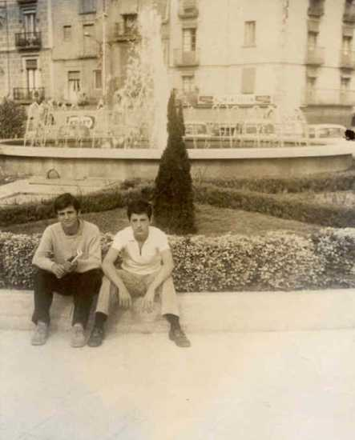
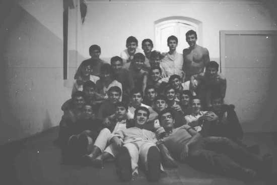

Galería de fotos
de
Matías Simón Villares
Debía ser en torno al año 74, "eran aun tiempos de Franco".- Romero, Dodo, Sanz, Araujo, Santos, y sentados : Sergio, Vitores, Corchete, Duarte, Matias Simón y Cobos
|
Aquel mes de abril de 1972, en segundo de bachiller, nos fuimos por los acantilados, marea baja, a la Peña del Fraile , nos hicimos la foto en esta preciosa cueva en los acantilados, la foto la hace Fernando Ruiz de la Rosa y ahí estamos Francisco José González Alvarez ( Dodo ), silbando, Matias Simón Villares, con la armóncia en la mano, Fernando Martín Duarte (Tinuco) y Francisco Soto Jiménez.
|
A la vuelta de los acantilados, nos sacamos esta foto con Don Pepe, 1972, ahí estamos Fernando Ruiz de la Rosa, Fernando Martín Duarte (a) Tinuco, Francisco José González Alvarez (a) Dodo, Don Pepe, Matias Simón Villares y Francisco Soto Jiménez
|
Diosdado Simón Villares, Dios para los amigos del Patronato, y su amigo Pedro Girón LLinas, en Arenys de Mar, con motivo del viaje de fin de curso en 1971. Diosdado ha fallecido , con tan sólo 47 años, en abril de 2002. Se convirtió en un gran Biólogo y en un eminente arboricultor en tierras de Extremadura. Descansa en paz.
  |
Un mogollón de compañeros de 5º curso (año 1975) en el dormitorio. Siento que la calidad de la foto no sea la adecuada, pero algo puede verse.
 |
volver